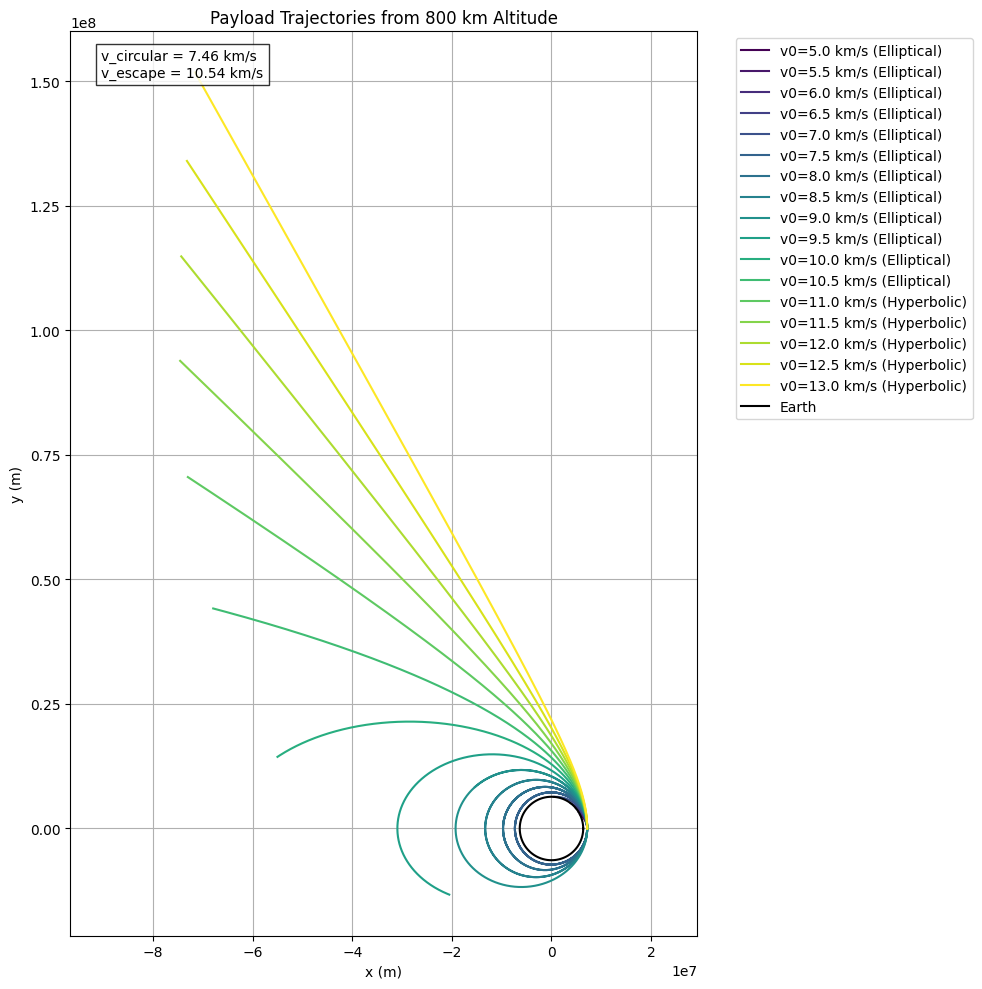
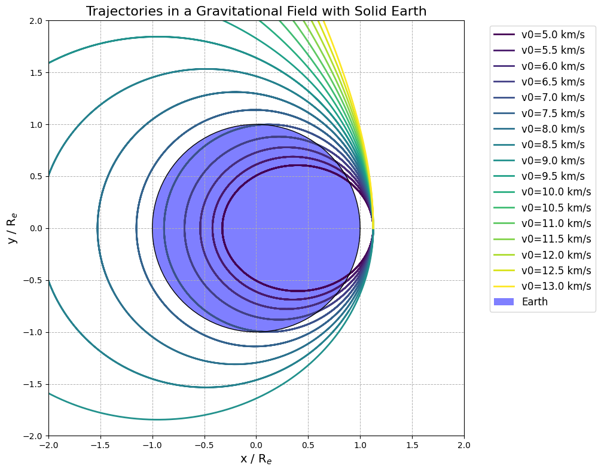
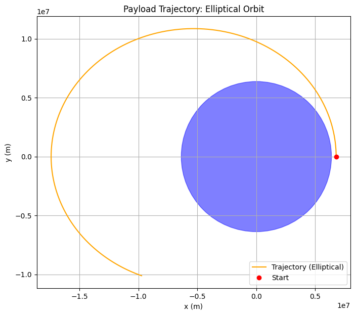

Problem 3
Trajectories of a Freely Released Payload Near Earth
The motion of a payload released near Earth (ignoring air resistance) follows one of the conic section trajectories—circle, ellipse, parabola, or hyperbola—depending on its initial speed relative to Earth and direction.
1. Circular Orbit
- Condition:
\(v = v_{\text{circular}}\) - Shape:
Circle (special case of ellipse) - Energy:
Total mechanical energy \(E < 0\) - Nature:
Closed orbit, constant speed and altitude. - Example:
Idealized geostationary satellite.
2. Elliptical Orbit
- Condition:
\(v_{\text{circular}} < v < v_{\text{escape}}\) - Shape:
Ellipse - Energy:
\(E < 0\) - Nature:
Closed orbit, speed and altitude vary. - Examples:
Low Earth Orbit (LEO), Medium Earth Orbit (MEO), Molniya orbit.
3. Parabolic Trajectory
- Condition:
\(v = v_{\text{escape}}\) - Shape:
Parabola - Energy:
\(E = 0\) - Nature:
Marginal escape – object escapes Earth, reaching infinity with zero velocity. - Example:
Theoretical boundary between bound and unbound motion.
4. Hyperbolic Trajectory
- Condition:
\(v > v_{\text{escape}}\) - Shape:
Hyperbola - Energy:
\(E > 0\) - Nature:
Open trajectory – object escapes Earth’s gravity with residual velocity. - Examples:
Interplanetary missions (e.g., Voyager, New Horizons after Earth flyby).
Summary Table
| Trajectory | Velocity Condition | Total Energy | Orbit Type |
|---|---|---|---|
| Circular | \(v = v_{\text{circular}}\) | \(E < 0\) | Bound (closed) |
| Elliptical | \(v_{\text{circular}} < v < v_{\text{escape}}\) | \(E < 0\) | Bound (closed) |
| Parabolic | \(v = v_{\text{escape}}\) | \(E = 0\) | Unbound (open) |
| Hyperbolic | \(v > v_{\text{escape}}\) | \(E > 0\) | Unbound (open) |


Numerical Analysis of a Payload Trajectory Near Earth
This analysis computes the path of a payload released near Earth using Newtonian gravitational physics. We simulate the trajectory based on initial conditions using numerical integration techniques.
Step 1: Define Constants and Initial Conditions
Let:
- Earth mass: \(M = 5.972 \times 10^{24} \ \text{kg}\)
- Gravitational constant: \(G = 6.67430 \times 10^{-11} \ \text{N} \cdot \text{m}^2/\text{kg}^2\)
- Earth radius: \(R_e = 6.371 \times 10^6 \ \text{m}\)
- Initial altitude: \(h = 400 \times 10^3 \ \text{m}\) (Low Earth Orbit)
- Total initial radius: \(R = R_e + h\)
Initial position and velocity:
- \(\vec{r}_0 = (R, 0)\)
- \(\vec{v}_0 = (0, v)\)
Reference velocities:
- Circular orbit velocity: \(v_{\text{circular}} = \sqrt{\frac{GM}{R}}\)
- Escape velocity: \(v_{\text{escape}} = \sqrt{2} \cdot v_{\text{circular}}\)
Step 2: Governing Equations
Using Newton's Law of Gravitation and Newton's Second Law, the equations of motion in 2D are:
In component form:
Step 3: Numerical Integration (Runge-Kutta 4th Order)
To numerically solve these equations, we define:
Let:
- \(\vec{r} = (x, y)\)
- \(\vec{v} = (v_x, v_y)\)
Convert to first-order ODEs:
These can be integrated using the Runge-Kutta 4th order method or Euler’s method.
Step 4: Trajectory Classification
We compute total mechanical energy to classify the orbit:
Total Energy
- \(E < 0\) → Elliptical orbit (bound)
- \(E = 0\) → Parabolic escape
- \(E > 0\) → Hyperbolic escape
Eccentricity (Optional)
The trajectory's eccentricity:
Where \(L = mrv_\perp\) is the angular momentum.
- \(e < 1\) → Elliptical
- \(e = 1\) → Parabolic
- \(e > 1\) → Hyperbolic

The trajectories—circular, elliptical, parabolic, and hyperbolic—dictate orbital insertion, reentry, and escape scenarios based on initial velocity and energy (\(E = \frac{1}{2}mv^2 - \frac{GMm}{r}\)).
- Orbital Insertion:
- Circular Orbit (\(v = v_{\text{circular}}\), \(E < 0\)): Stable, constant-altitude orbit (e.g., geostationary satellites). Requires \(v_{\text{circular}} \approx 7.67 \, \text{km/s}\) at 400 km altitude.
- Elliptical Orbit (\(v_{\text{circular}} < v < v_{\text{escape}}\), \(E < 0\)): Bound orbit with varying altitude (e.g., LEO, GPS satellites). Achieved via precise burns, often using transfer orbits.
-
Process: Velocity adjustments ensure \(E < 0\), \(e < 1\).
-
Reentry:
- Circular/Elliptical Orbits: Starts bound (\(E < 0\)). A retro-burn (\(\Delta v \approx 100-200 \, \text{m/s}\)) lowers perigee into the atmosphere (e.g., Crew Dragon).
- Parabolic/Hyperbolic Trajectories (\(E \geq 0\)): Rare, often uncontrolled (e.g., meteoroids, Stardust capsule).
-
Process: Energy loss via burns or drag shifts trajectory to descent.
-
Escape Scenarios:
- Parabolic Trajectory (\(v = v_{\text{escape}}\), \(E = 0\)): Marginal escape, zero velocity at infinity. Theoretical minimum.
- Hyperbolic Trajectory (\(v > v_{\text{escape}}\), \(E > 0\)): Unbound, with residual velocity (e.g., Voyager). Needs \(\Delta v \approx 3.2 \, \text{km/s}\) from LEO.
- Process: Burns or gravitational assists achieve \(E \geq 0\), \(e \geq 1\).
Relation: Energy and eccentricity (\(e = \sqrt{1 + \frac{2EL^2}{G^2M^2m^3}}\)) classify trajectories: - Insertion: \(E < 0\), \(e < 1\) (bound). - Reentry: Bound, energy reduced for atmospheric entry. - Escape: \(E \geq 0\), \(e \geq 1\) (unbound). Numerical integration (e.g., Runge-Kutta) ensures precise trajectory prediction.
Circular, elliptical, parabolic, and hyperbolic trajectories, driven by velocity and energy (\(E = \frac{1}{2}mv^2 - \frac{GMm}{r}\)), enable space mission planning, satellite deployment, and planetary exploration. Numerical integration ensures accuracy.
Real-world applications
1. Space Mission Planning
Optimizes trajectories for insertion, reentry, or escape. - Circular (\(v = v_{\text{circular}}\), \(E < 0\)): Stable orbits (e.g., geostationary, \(v \approx 3.07 \, \text{km/s}\)). Precise burns. - Elliptical (\(v_{\text{circular}} < v < v_{\text{escape}}\), \(E < 0\)): Variable orbits (e.g., GPS). Hohmann transfers, \(e < 1\). - Hyperbolic (\(v > v_{\text{escape}}\), \(E > 0\)): Escapes (e.g., New Horizons, \(v > 11.2 \, \text{km/s}\)). Uses flybys.
2. Satellite Deployment
Places satellites in circular or elliptical orbits. - Circular: LEO (e.g., Starlink, \(v \approx 7.6 \, \text{km/s}\)). Burn-circularized, \(e \approx 0\). - Elliptical: Specialized (e.g., Molniya). Transfer orbits, debris avoidance.
3. Planetary Exploration
Elliptical for departure, hyperbolic for travel, circular/elliptical for arrival. - Elliptical: Parking orbits (e.g., Perseverance). Low \(\Delta v\). - Hyperbolic: Interplanetary (e.g., Voyager, \(e > 1\)). Flybys, corrections. - Circular/Elliptical: Target orbits (e.g., Juno at Jupiter). Burns/aerobraking.
Summary
- Planning: Circular for stability, elliptical for transfers, hyperbolic for escapes.
- Deployment: Circular LEO, elliptical specialized.
- Exploration: Elliptical to hyperbolic to target orbits. Uses \(\vec{a} = -\frac{GM}{r^3}\vec{r}\), \(E\), \(e = \sqrt{1 + \frac{2EL^2}{G^2M^2m^3}}\), numerical precision.